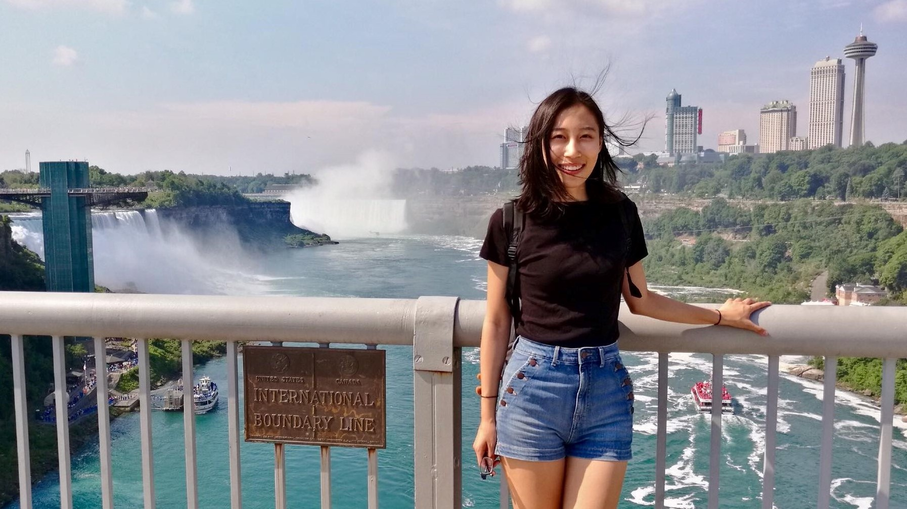

Hi!
I am Mojin.
These are my works.
I am Mojin.
These are my works.
ux/ui

new media & digital art
generative visualization with environmental sensors
interactive AR snapchat lens

"8-bit game" animation
web development


graphic design
snapchat filters

logo designs

poster designs for history courses

social media graphics

poster designs for concerts

creative collage

other

about me

Hi, there! My name is Mojin Yu.
My favorite childhood activity was making games in Microsoft PowerPoint. To make sure my little sister could play my games, I spent a lot of time adjusting the interactions so that they would make sense to a preschooler. This experience sparked my interests in understanding people's different experiences in the world and creating with new technologies.
I graduated from the University of Rochester with a double-major in Digital Media Studies and Psychology. Currently, I'm pursuing a Master's degree in Human Centered Design and Engineering at the University of Washington. As an aspiring UX designer, I would love to leverage my interdisciplinary skills to solve challenging problems. I am particularly passionate about designing for environmental topics, mixed reality, and multimodal interfaces.
Here's my resume!
contact info:
mojinyu@uw.edu // (585)-267-0986